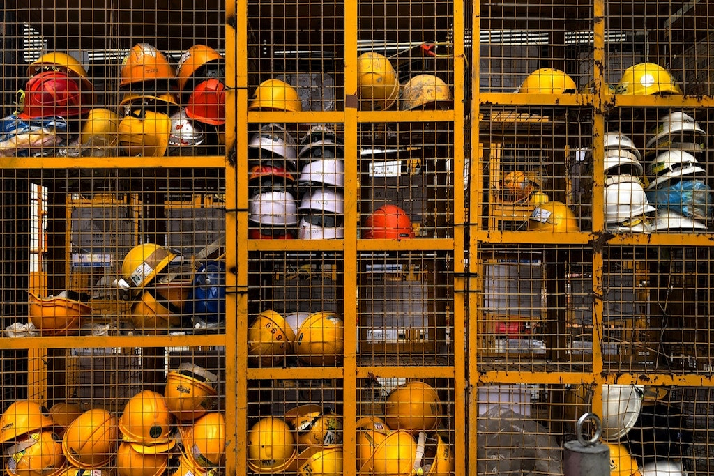
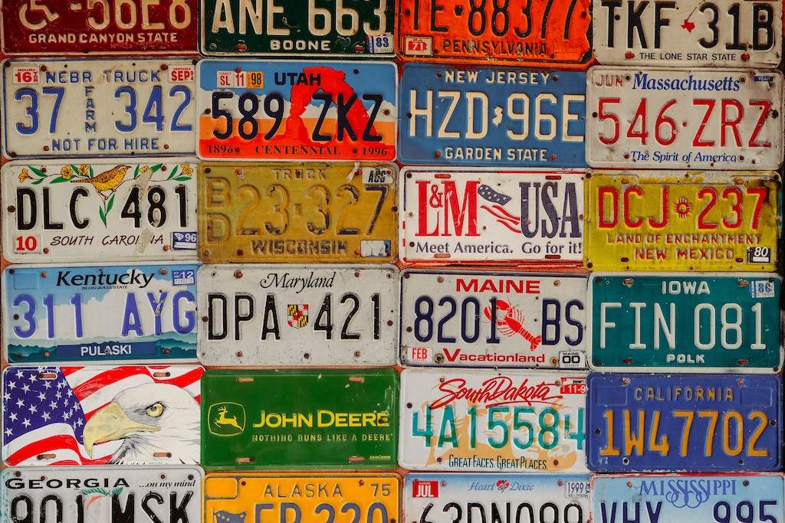
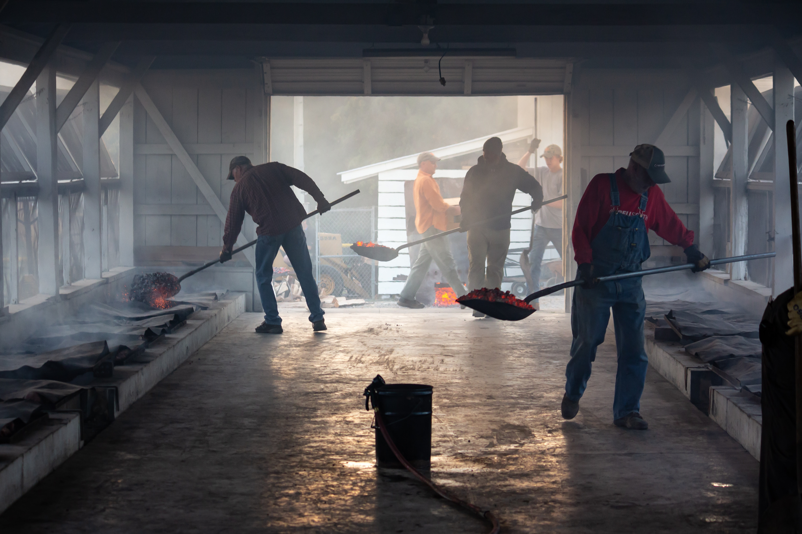
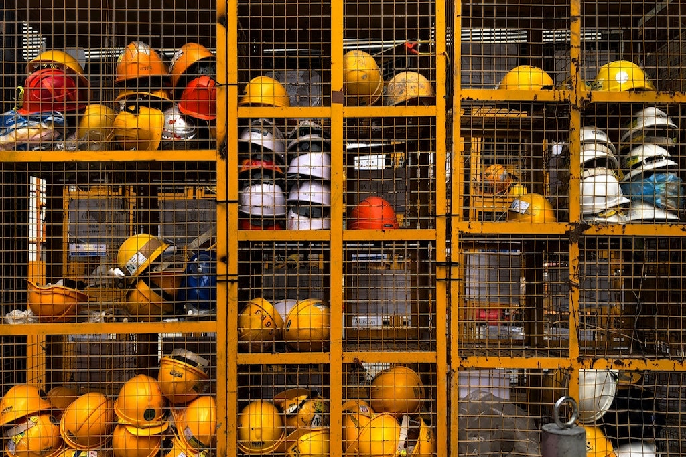
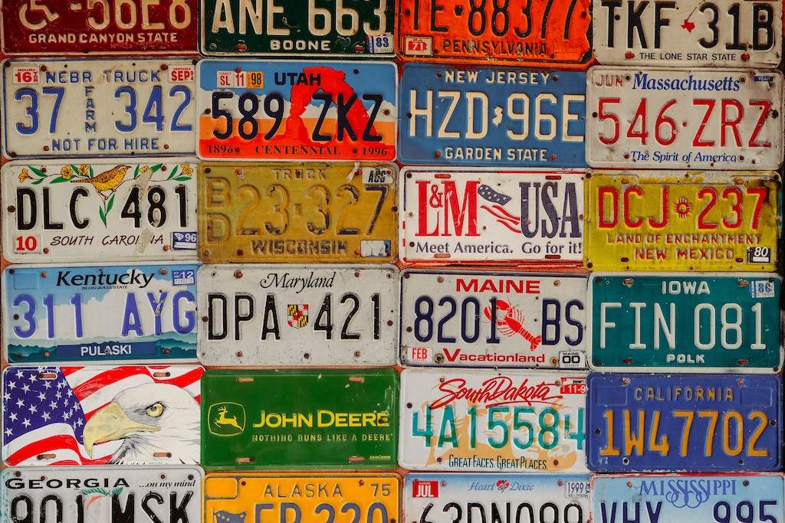
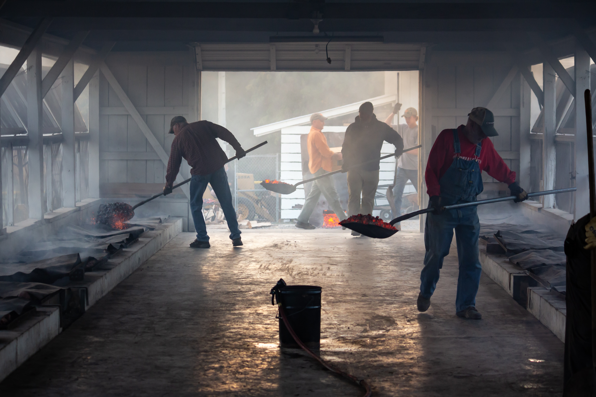

What is Second Chance?
"Second Chance" is an intuitive web platform that allows you to look into different prison demographics near you and analyze the different individual resumes and skill sets as potential employees for your business.
Why Second Chance?
Own a business? Want to do good in the world? Look no further! Some inmates may have permissions to work away from prison and others may be close to transitioning back into civilian life and may even come a permanent asset to your team if you wish it to be!
Testimonials
Name: Linda, Brave Machinery
I've hired three employees through Second chance. Each of them comes fully prepared both for the workforce in general as well as for the specific job. They are fast learners and have been a great asset to the team!
Name: Anthony, Clean Commericial
I was a bit skeptical when I first heard about Second Chance but I decided to give it a try after reading the reviews. Best decision I made. Our laundry output increased twenty percent with the two new hires after two months!
Name: Keyshia, Universal Fabrics
Productive is these workers' middle name. They have been truly a joy to work with. We have directly related an increase in profits to 4 different hires from Second Chance! I plan to hire many more employees from this platform
Name: Darren, Office Metals
Productive is these workers' middle name. They have been truly a joy to work with. We have directly related an increase in profits to 4 different hires from Second Chance! I plan to hire many more employees from this platform
Name: Linda, Brave Machinery
I've hired three employees through Second chance. Each of them comes fully prepared both for the workforce in general as well as for the specific job. They are fast learners and have been a great asset to the team!